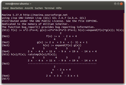
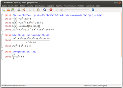
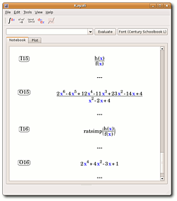

Maxima
Dieser Artikel wurde für die folgenden Ubuntu-Versionen getestet:
Ubuntu 16.04 Xenial Xerus
Zum Verständnis dieses Artikels sind folgende Seiten hilfreich:
Maxima  ist ein mächtiges Computeralgebrasystem in der Art von Derive, Maple oder Mathematica. Es ist auf symbolisch-analytische Berechnungen spezialisiert, jedoch auch für numerische Berechnungen geeignet. Der Vorläufer von Maxima, MACSYMA, wurde in den 60er Jahren am MIT entwickelt und war eines der ersten Computeralgebrasysteme überhaupt. 1998 erfolgte die Erlaubnis, Maxima unter der GPL zu veröffentlichen, so dass das Programm heute ein Open-Source-Projekt ist.
ist ein mächtiges Computeralgebrasystem in der Art von Derive, Maple oder Mathematica. Es ist auf symbolisch-analytische Berechnungen spezialisiert, jedoch auch für numerische Berechnungen geeignet. Der Vorläufer von Maxima, MACSYMA, wurde in den 60er Jahren am MIT entwickelt und war eines der ersten Computeralgebrasysteme überhaupt. 1998 erfolgte die Erlaubnis, Maxima unter der GPL zu veröffentlichen, so dass das Programm heute ein Open-Source-Projekt ist.
Maxima wird über die Kommandozeile bedient, jedoch existiert eine ganze Reihe von grafische Oberflächen, welche die Bedienung komfortabler machen und die Ausgabe des Programms besser darstellen können. Die bekannteste und populärste von diesen ist wohl wxMaxima (siehe unten). Für verschiedene Editoren aus der Emacs-Familie existieren ebenfalls Frontends, teilweise mit hervorragender grafischer Ausgabe.
Die Syntax bei der Direkteingabe unterscheidet sich etwas von der bei Maple oder MuPAD. Funktionen werden beispielsweise immer mit Argument definiert. Eingaben werden durch ein (%i) und Ausgaben durch ein (%o) am Anfang einer Zeile gekennzeichnet. In der grafische Oberfläche wxMaxima kann man diese Symbole anklicken und die zugehörige Rechnung wird eingeklappt.

Maxima¶
Folgendes Paket muss installiert [1] werden:
maxima (universe)
 mit apturl
mit apturl
Paketliste zum Kopieren:
sudo apt-get install maxima
sudo aptitude install maxima
Installation aus dem Quellcode¶
Wer Maxima selbst kompilieren möchte, muss zuerst neben den unter [4] genannten Paketen noch einen Lisp-Compiler wie z.B. gcl installieren:
gcl (universe)
mit apturl
Paketliste zum Kopieren:
sudo apt-get install gcl
sudo aptitude install gcl
Danach kann man sich von der Homepage den Quellcode herunterladen  und kompilieren [4].
und kompilieren [4].
Verwendung¶
Nach Abschluss der Installation lässt sich die Anwendung durch den Befehl maxima in einem Terminalfenster starten [2]. Der Kommandozeilenmodus von Maxima eignet sich nicht nur für Puristen, sondern auch für einfache Rechnungen, bei denen ein grafisches Frontend nicht nötig oder überdimensioniert ist.

wxMaxima¶
Die beliebte grafische Oberfläche wxMaxima lässt sich mittels des folgenden Paketes installieren:
wxmaxima (universe)
mit apturl
Paketliste zum Kopieren:
sudo apt-get install wxmaxima
sudo aptitude install wxmaxima
Anschließend kann man die Anwendung mit dem Befehl wxmaxima oder bei Ubuntu-Varianten mit einem Anwendungsmenü über "Sonstige -> wxMaxima" starten [3].
Installation aus dem Quellcode¶
Auch wxMaxima lässt sich sehr einfach aus dem Quellcode erstellen. Neben den unter [4] genannten Paketen muss man noch die folgenden Pakete installieren:
libwxgtk2.6-dev
libxml2-dev
mit apturl
Paketliste zum Kopieren:
sudo apt-get install libwxgtk2.6-dev libxml2-dev
sudo aptitude install libwxgtk2.6-dev libxml2-dev
da wxMaxima auf wxWidgets basiert. Jetzt kann man das Programm kompilieren [4], sollte aber bei ./configure die Optionen
./configure --enable-printing --enable-dnd --enable-unicode-glyphs
eingeben, um die komplette Unterstützung zu erhalten.
Verwendung¶
Die grafische Oberfläche ist sehr einsteigerfreundlich aufgebaut. Am unteren Rand sieht man Knöpfe für die am häufigsten benutzten Funktionen wie das Lösen von Gleichungen oder das Faktorisieren von Termen. In der oberen Menüleiste findet man die restlichen Befehle, sortiert nach den Gebieten "Gleichungen", "Algebra", "Rechnen", "Vereinfachen", "Plotten" und "Numerisch".
Bei der grafischen Oberfläche wxMaxima passiert es manchmal, dass sich ausgeblendete Zeilen nicht wieder einblenden lassen.

Kayali¶
Für KDE-Nutzer steht mit Kayali eine weitere Oberfläche zur Verfügung, die man dann unter "Bildung -> Kayali" starten kann. Die Installation erfolgt über das Paket:
kayali (universe)
mit apturl
Paketliste zum Kopieren:
sudo apt-get install kayali
sudo aptitude install kayali
Verwendung¶
Vom Funktionsumfang ist Kayali eher marginal gehalten und stellt per Menü oder Rechtsklick nur die Funktionen zum Differenzieren, Integrieren, Faktorisieren und Plotten bereit, wobei die gezeichneten Graphen etwas verschwommen aussehen. Ganz nett ist der Export als PDF, mit dem man das aktuelle Arbeitsblatt speichern kann.
Bei Kayali funktionieren einige Menüelemente wie zum Beispiel die "Preferences" oder der "About"-Dialog nicht. Ein Semikolon am Ende einer Eingabe bringt das Programm darüber hinaus ins Stocken.
Maxima im TeXmacs¶
GNU TeXmacs ist ein leistungsfähiger LaTeX-Editor, der sich auch als Frontend für Maxima einsetzen lässt. Der große Vorteil liegt darin, dass mathematische Formeln im TeXmacs besonders übersichtlich dargestellt werden. Die Einrichtung und Verwendung von Maxima im TeXmacs wird im Wiki-Artikel zum TeXmacs ausführlich beschrieben.
Links¶
wxMaxima: Taylorreihen
 - Blogbeitrag, 01/2014
- Blogbeitrag, 01/2014Grundlagen wxMaxima
- Befehlsübersicht, Blogbeitrag 09/2010

- Erstellt mit Inyoka
-
 2004 – 2017 ubuntuusers.de • Einige Rechte vorbehalten
2004 – 2017 ubuntuusers.de • Einige Rechte vorbehalten
Lizenz • Kontakt • Datenschutz • Impressum • Serverstatus -
Serverhousing gespendet von